공조냉동기계기사(구) (2012-03-04 기출문제)
1과목: 기계열역학
1. 실린더안에 0.8kg의 기체를 넣고 이것을 압축하기 위해서는 13 kJ의 일이 필요하며, 또 이때 실린더를 냉각하기 위해서 10 kJ의 열을 빼앗아야 한다면 이 기체의 비 내부에너지 변화량은?
- 3.75 kJ/kg의 증가
- 28.8 kJ/kg의 증가
- 3.75 kJ/kg의 감소
- 28.8 kJ/kg의 감소
(정답률: 65%)

2. 에어컨을 이용하여 실내의 열을 외부로 방출하려한다. 실외 35℃, 실내 20℃인 조건에서 실내로부터 3kW의 열을 방출하려 할 때 필요한 에어컨의 동력은 얼마인가? (단, Carnot cycle을 가정한다.)
- 0.154 k
- 1.54 kW
- 15.4 kW
- 154 kW
(정답률: 66%)
3. 29℃와 227℃ 사이에서 작동하는 카르노(Carnot)사이클 열기관의 열효율은?
- 60.4%
- 39.6%
- 0.604%
- 0.396%
(정답률: 74%)
4. 두께 1cm, 면적 0.5m2의 석고판의 뒤에 가열 판이 부착되어 1000W의 열을 전달한다. 가열 판의 뒤는 완전히 단열되어 열은 앞면으로만 전달된다. 석고판 앞면의 온도는 100℃이다. 석고의 열전도율이 k=0.79W/m ㆍ K일 때 가열 판에 접하는 석고 면의 온도는 약몇 ℃ 인가?
- 110
- 125
- 150
- 212
(정답률: 72%)
5. 다음 냉동 시스템의 설명 중 틀린 것은?
- 왕복동 압축기는 냉매가 낮은 비체적과 높은 압력일 때 적합하며 원심 압축기는 높은 비체적과 낮은 압력을 때 적합하다.
- R-22와 같은 수소를 포함하는 HCFC는 대기 중의 수명이 비교적 짧으므로 성층권에 도달하여 분해되는 양이 적다.
- 냉동 사이클은 동력 사이클의 터빈을 밸브나 긴 모세관 등의 스로틀 기기로 대치하여 작동유체가 고압에서 저압으로 스로틀 팽창하도록 한다.
- 흡수식 시스템은 액체를 가압하므로 소요되는 입력 일이 매우 크다.
(정답률: 58%)
6. 다음 중 열역학적 상태량이 아닌 것은?
- 기체상수
- 정압비열
- 엔트로피
- 압력
(정답률: 43%)
7. 고속주행 시 타이어의 온도는 매우 많이 상승한다. 온도 20℃에서 계기압력 0.183 MPa의 타이어가 고속 주행으로 온도 80℃로 상승할 때 압력 상승한 양(Kpa)은? (단, 타이어의 체적은 변하지 않고, 타이어 내의 공기는 이상기체로 가정한다. 대기압은 101.3 Kpa이다.)
- 약 37 Kpa
- 약 58 Kpa
- 약 286 Kpa
- 약 345 Kpa
(정답률: 56%)
8. 어떤 냉장고에서 질량유량 80kg/hr 의 냉매가 17kJ/kg의 엔탈피로 증발기에 들어가 엔탈피 36kJ/kg가 되어 나온다. 이 냉장고의 냉동능력은?
- 1220 kJ/hr
- 1800 kJ/hr
- 1520 kJ/hr
- 2000 kJ/hr
(정답률: 72%)
9. 오토사이클(Otto Cycle)의 이론적 열효율 ηth를 나타내는 식은? (단, ε는 압축비, k는 비열비이다.)
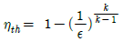
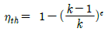
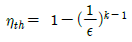
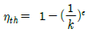
(정답률: 66%)
10. 다음 사항 중 옳은 것은?
- 엔트로피는 상태량이 아니다.
- 엔트로피를 구하는 적분 경로는 반드시 가역변화라야 한다.
- 비가역 사이클에서 클라우지우스(Clausius) 적분은 영이다.
- 가역, 비가역을 포함하는 모든 이상기체의 등온변화에서 압력이 저하하면 엔트로피도 저하한다.
(정답률: 44%)
11. 성능계수(COP)가 0.8인 냉동기로서 7200 kJ/h로 냉동하려면, 이에 필요한 동력은?
- 약 0.9 kW
- 약 1.6 kW
- 약 2.5 kW
- 약 2.0 kW
(정답률: 61%)
12. 물질의 상태에 관한 설명으로 옳은 것은?
- 압력이 포화압력보다 높으면 과열증기 상태다.
- 온도가 포화온도보다 높으면 압축액체이다.
- 임계압력 이하의 액체를 가열하면 증발현상을 거치지 않는다.
- 포화상태에서 압력과 온도는 종속관계에 있다.
(정답률: 50%)
13. 다음 열기관 사이클의 에너지 전달량으로 적절한 것은?
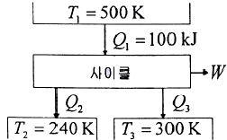
- Q2 = 20kJ, Q3 = 30kJ, W = 50kJ
- Q2 = 20kJ, Q3 = 50kJ, W = 30kJ
- Q2 = 30kJ, Q3 = 30kJ, W = 50kJ
- Q2 = 30kJ, Q3 = 20kJ, W = 50kJ
(정답률: 54%)
14. 질량 m=100 kg인 물체에 a=2.5m/s2의 가속도를 주기 위해 가해야 할 힘(F)은 약 몇 N 인가?
- 102
- 2⑤
- 225
- 250
(정답률: 73%)
15. 100kPa, 20℃의 물을 매시간 3000kg씩 500kPa로 공급하기 위하여 소요되는 펌프의 동력은 약 몇 kW인가? (단, 펌프의 효율은 70%로 물의 비체적은 0.001m3/kg으로 본다.)
- 0.33
- 0.48
- 1.32
- 2.48
(정답률: 43%)
16. 그림과 같은 증기압축 냉동사이클이 있다. 1, 2, 3상태의 엔탈피가 다음과 같을 때 냉매의 단위 질량당 소요 동력과 냉각량은 얼마인가?(단, h1=178.16, h2=210.38, h3=74.53, 단위:kJ/kg)
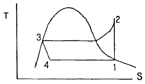
- 32.22 kJ/kg, 103.63 kJ/kg
- 32.22 kJ/kg, 136.85 kJ/kg
- 103.63 kJ/kg, 32.22 kJ/kg
- 136.85 kJ/kg, 32.22 kJ/kg
(정답률: 50%)
17. 대기압하에서 20℃의 물 1kg을 가열하여 같은 압력의 150℃의 과열 증기로 만들었다면, 이때 물의 흡수한 열량은 20℃와 150℃에서 어떠한 양의 차이로 표시되겠는가?
- 내부에너지
- 엔탈피
- 엔트로피
- 일
(정답률: 54%)
18. 두 정지 계가 서로 열 교환을 하는 경우에 한쪽계는 수열에 의한 엔트로피 증가가 있고, 다른 계는 방열에 의한 엔트로피 감소가 있다. 이들 두 계를 합하여 한계로 생각하면 단열된 계가 된다. 이 합성계가 비가역 단열변화를 하면 이 합성계의 엔트로피 변화 dS는?
- dS < 0
- dS > 0
- dS = 0
- dS ≠ 0
(정답률: 54%)
19. 질량 4 kg의 액체를 15℃에서 100℃까지 가열하기 위해 714 kJ의 열을 공급하였다면 액체의 비열(specific heat)은 몇 J/kgㆍK인가?
- 1100
- 2100
- 3100
- 4100
(정답률: 74%)
20. 800 kPa, 350℃의 수증기를 200 kPa로 교축한다. 이 과정에 대하여 운동 에너지의 변화를 무시할 수 있다고 할 때 이 수증기의 Joule-Thomson 계수는? (단, 교축 후의 온도는 344℃이다)
- 0.0⑤ K/kPa
- 0.01 K/kPa
- 0.02 K/kPa
- 0.03 K/kPa
(정답률: 58%)
2과목: 냉동공학
21. 냉장고내 유지온도에 따라 저압압력이 낮아지는 원인이 아닌 것은?
- 고내 공기가 냉각되므로 증발기에 서리가 두껍게 부착한다.
- 냉매가 장치에 과충전 되어 있다.
- 냉장고의 부하가 작다.
- 냉매 액관 중에 플래쉬 가스(flash gas)가 발생하고 있다.
(정답률: 54%)
22. 냉동사이클의 냉매 상태변화와 관계가 없는 것은?
- 등엔트로피 변화
- 등압 변화
- 등엔탈피 변화
- 등적 변화
(정답률: 58%)
23. 초저온 동결에 액체질소를 사용할 때의 장점이라 할 수 없는 것은?
- 동결시간이 단축되어 연속작업이 가능하다.
- 급속 동결이 가능하므로 품질이 우수하다.
- 동결건조가 일어나지 않는다.
- 발생되는 질소가스를 다시 사용할 수 있다.
(정답률: 71%)
24. 빙축열 방식이 수축열 방식에 비해 유리하다고 할수 없는 것은?
- 축열조를 소형화할 수 있다.
- 낮은 온도를 이용할 수 있다.
- 난방 시의 축열대응에도 적합하다.
- 축열조의 설치장소가 자유롭다.
(정답률: 62%)
25. 다음 중 증기 이젝터(ejector)가 필요하며 물의 냉각목적에 사용하는 냉동기는?
- 전자 냉동기
- 흡수식 냉동기
- 증기압축식 냉동기
- 증기분사식 냉동기
(정답률: 69%)
26. 흡수식 냉동기용 흡수제의 구비조건 중 잘못된 것은?
- 용액의 증기압이 낮을 것
- 농도 변화에 의한 증기압의 변화가 작을 것
- 재생에 많은 열량을 필요로 하지 않을 것
- 동일압력에서 증발 시 증발온도가 냉매의 증발온도와 차이가 없을 것
(정답률: 61%)
27. 냉매 R-22 는 2.5 kgf/cm2 의 압력에서 포화액 및 건포화증기의 엔탈피 값이 각각 94.58 kcal/kg, 147.03 kcal/kg 이다. 그러면 압력 2.5 kgf/cm2에서 건도(x)가 0.75 인 습증기의 엔탈피(h)는 약 얼마인가?
- 120 kcal/kg
- 134 kcal/kg
- 140 kcal/kg
- 145 kcal/kg
(정답률: 71%)
28. 다음은 냉동장치에 사용되는 자동제어기기에 대하여 설명한 것이다. 이 중 옳은 것은?
- 고압 차단 스위치는 토출압력이 이상 저압이 되었을 때 작동하는 스위치이다.
- 온도 조절 스위치는 냉장고 등의 온도가 일정범위가 되도록 작용하는 스위치이다.
- 저압 차단 스위치(정지용)는 냉동기의 고압측 압력이 너무 저하 하였을 때 차단하는 스위치이다.
- 유압 보호 스위치는 유압이 올라간 경우에 유압을 내리기 위한 스위치이다.
(정답률: 69%)
29. 아이스머신 중 칩 아이스머신(chip ice machine)은 어느 식과 어느 식의 개량형인가?
- 팩 아이스머신식과 플레이트 아이스머신식
- 플레이트 아이스머신식과 튜브 아이스머신식
- 팩 아이스머신식과 튜브 아이스머신식
- 튜브 아이스머신식과 코일 아이스머신식
(정답률: 56%)
30. 다음 브라인에 대한 설명 중 틀린 것은?
- 브라인은 농도가 진하게 될수록 부식성이 크다.
- 염화칼슘 브라인은 동결점이 매우 낮으며 부식성도 염화나트륨 브라인보다 작다.
- 염화마그네슘 브라인은 염화나트륨 브라인보다 동 결점이 낮으며 부식성도 작다.
- 브라인에 대한 부식 방지를 위해서는 밀폐 순환식을 채택하여 공기에 접촉하지 않게 해야 한다.
(정답률: 63%)
31. 어떤 냉장실 온도를 -20℃로 유지하기 위해 25A관을 사용하였을 때 필요한 관 길이는 약 얼마인가?(단, 관의 열통과율은 6 kcal/m2h℃, 냉동 부하는 2 RT냉매온도는 -32℃이다.)
- 1.175m
- 11.75m
- 117.5m
- 1175m
(정답률: 37%)
32. 다음 응축기 중 열통과율이 가장 작은 형식은?
- 7통로식 응축기
- 입형 셀 튜브식 응축기
- 공랭식 응축기
- 2중관식 응축기
(정답률: 65%)
33. 팽창밸브에 사용하는 감온통의 배관상 설치위치에 대한 설명이 잘못된 것은?
- 증발기 출구측 흡입관의 수평부에 설치한다.
- 흡입관 관경이 20mm 이상일 때는 중심부 수평에서 45° 상부에 설치한다.
- 흡입관 관경이 20mm 이하일 때는 배관 상부에 설치한다.
- 트랩부분에는 설치하지 않는다.
(정답률: 57%)
34. H2O-LiBr 흡수식 냉동기에 냉매의 순환과정을 올바르게 표사한 것은? (단, ①냉각기(증발기), ②흡수기, ③응축기, ④발생기 이다.)
- ④ → ③ → ① → ②
- ④ → ① → ③ → ②
- ③ → ④ → ① → ②
- ③ → ② → ④ → ①
(정답률: 66%)
35. 증발식 응축기에 대한 설명 중 옳은 것은?
- 냉각수의 감열(현열)로 냉매가스를 응축
- 외기의 습구 온도가 높아야 응축능력 증가
- 응축온도가 낮아야 응축능력 증가
- 냉각탑과 응축기의 기능을 하나로 합한 것
(정답률: 61%)
36. 카르노 사이클 기관은 0℃ 와 100℃ 사이에서 작용할 때 400℃ 와 500℃ 사이에서 작용할 때와의 열효율을 비교하면 전자는 후자의 약 몇 배가 되겠는가?
- 1.2배
- 2배
- 4배
- 3배
(정답률: 75%)
37. 냉동사이클에서 습압축으로 일어나는 현상에 맞지 않는 것은?
- 응축잠열 감소
- 냉동능력 감소
- 압축기의 체적 효율 감소
- 성적계수의 감소
(정답률: 62%)
38. 다음과 같은 상태에서 운전되는 암모니아 냉동기에 있어서 압축기가 흡입하는 가스 1m3/h 의 냉동효과는 약 얼마인가?
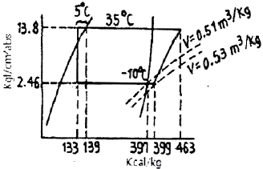
- 490 kcal/h
- 502 kcal/h
- 611 kcal/h
- 735 kcal/h
(정답률: 56%)
39. 냉각탑(Cooling tower)에 관한 설명 중 맞는 것은?
- 오염된 공기를 깨끗하게 하며 동시에 공기를 냉각하는 장치이다.
- 냉매를 통과시켜 공기를 냉각시키는 장치이다.
- 찬 우물물을 냉각시켜 공기를 냉각시키는 장치이다.
- 냉동기의 냉각수가 흡수한 열을 외기에 방사하고 온도가 내려간 물을 재순환시키는 장치이다.
(정답률: 71%)
40. 암모니아 및 프레온 냉매와의 비교 중 틀린 것은?
- 암모니아 냉동장치에서 수분이 1% 함유에 따라 증발온도 0.5℃상승한다.
- R-22는 암모니아보다 냉동효과(kcal/kg)가 크고 안전하다.
- R-13는 R-22에 비하여 저온용에 적합하다.
- 암모니아는 R-22에 비하여 유분리가 용이하다.
(정답률: 57%)
3과목: 공기조화
41. 공기조절기의 공기냉각 코일에서 공기와 냉수의 온도변화가 그림과 같았다. 이 코일의 대수평균 온도차(LMTD)는 약 얼마인가?
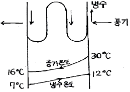
- 9.6℃
- 14.5℃
- 13℃
- 5℃
(정답률: 66%)
42. 팬코일 유닛의 구성과 관계없는 것은?
- 송풍기
- 여과기
- 냉온수 코일
- 가습기
(정답률: 58%)
43. 공기중의 수증기가 응축하기 시작할 때의 온도 즉, 공기가 포화상태로 될 때의 온도는 어느 것인가?
- 건구온도
- 노점온도
- 습구온도
- 상당외기온도
(정답률: 75%)
44. 공기-수 방식에 의한 공기조화의 설명으로 옳지 않은 것은?
- 유닛 1대로서 구획(zone)을 구성하므로 개별제어가 가능하다.
- 장치내 필터의 성능이 나빠 정기적으로 청소할 필요가 있다.
- 전공기 방식에 비해 반송동력이 크다.
- 부하가 큰 구획(zone)에 대해서도 덕트 스페이스가 작다.
(정답률: 49%)
45. 수관 보일러의 분류가 잘못된 것은?
- 동(드럼)의 유무에 따라 무동식과 7동식으로 분류
- 순환방식에 따라 자연순환식과 강제순환식으로 분류
- 수관의 경사도에 따라 수평관식, 경사관식, 수직관식으로 분류
- 수관의 형태에 따라 직관식과 곡관식으로 분류
(정답률: 58%)
46. 각 공조방식과 열 운반 매체의 연결이 잘못된 것은?
- 단일덕트 방식 - 공기
- 이중덕트 방식 - 물, 공기
- 2관식 팬코일 유닛 방식 - 물
- 패키지 유닛방식 - 냉매
(정답률: 70%)
47. 제3종 환기에 대한 설명으로 틀린 것은?
- 기계배기를 한다.
- 실내압력이 대기압이하로 된다.
- 오염공기가 발생하는 실내에 적합하다.
- 급기만 송풍기에 의해 한다.
(정답률: 68%)
48. 난방설비에서 온수헤더 또는 증기헤더를 사용하는 주된 이유로 적합한 것은?
- 온수 및 증기의 온도차가 커지는 것을 방지하기 위해서
- 워터 해머(water hammer)를 방지하기 위해서
- 미관을 좋게 하기 위해서
- 온수 및 증기를 각 계통별로 공급하기 위해서
(정답률: 71%)
49. 기후에 따른 불쾌감을 표시하는 불쾌지수는 무엇을 고려한 지수인가?
- 기온과 기류
- 기온과 노점
- 기온과 복사열
- 기온과 습도
(정답률: 79%)
50. 실내 냉방 전부하가 33000 kcal/h(현열 28800kcal/h, 잠열 4200kcal/h)일 때 실내 급기풍량은 얼마인가? (단, 공기의 비율 0.24 kcal/kg℃, 비중량1.2kg/m3, 취출온도차는 10℃로 한다.)
- 11460m3/h
- 12000m3/h
- 10000m3/h
- 14520m3/h
(정답률: 54%)
51. 공기 세정기의 주요부는 세정실과 무엇으로 구분 되는가?
- 배수관
- 유닛 히트
- 유량조절 밸브
- 엘리미네이트
(정답률: 73%)
52. 내벽의 열전달율 5kcal/m2h℃, 외벽의 열전달율10 kcal/m2h℃, 벽의 열전도율 4 kcal/m h℃, 벽두께20cm, 외기온도 0℃, 실내온도 20℃ 일 때 열통과율은 약 얼마인가?
- 2.86 kcal/m2h℃
- 3.75 kcal/m2h℃
- 4.52 kcal/m2h℃
- 5.35 kcal/m2h℃
(정답률: 61%)
53. 공기여과기(air filter)의 여과효율을 측정하는 방법이 아닌 것은?
- 비색법
- DOP법
- 중량법
- 정전기법
(정답률: 62%)
54. 난방부하가 3520kcal/h인 사무실을 약 85~90℃정도의 온수를 이용하여 온수난방을 하려고 한다. 온수방열기의 필요 방열면적(m2)은 약 얼마인가?
- 5.4
- 6.6
- 7.8
- 8.9
(정답률: 65%)
55. 공조설비에 사용되는 보일러에 대한 설명으로 적당하지 않은 것은?
- 증기보일러의 보급수는 연수장치로 처리할 필요가 있다.
- 보일러효율은 연료가 보유하는 고위 발열량을 기준으로 하고, 보일러에서 발생한 열량과의 비를 나타낸 것이다.
- 관류보일러는 소요 압력의 증기를 비교적 짧은 시간에 발생시킬 수 있다.
- 증기보일러 및 수온이 120℃를 초과하는 온수보일러에는 안전장치로서 본체에 안전밸브를 설치할 필요가 있다.
(정답률: 56%)
56. 증기 난방배관에서 증기트랩을 사용하는 이유로서 가장 적당한 것은?
- 관내의 공기를 배출하기 위하여
- 배관의 신축을 흡수하기 위하여
- 관내의 압력을 조절하기 위하여
- 증기관에 발생된 응축수를 제거하기 위하여
(정답률: 68%)
57. 다음 중 일사를 받은 벽의 전열계산과 관계있는 것은?
- 대수평균 온도차
- 벽면양쪽 온도차
- 상당외기 온도차
- 유효온도차
(정답률: 67%)
58. 덕트의 설계법 중 모든 덕트 계통에서 동일한 단위마찰저항으로 하여 각 부의 덕트 치수를 결정하는 방법은?
- 등속법
- 정압법
- 등분기법
- 정압재취득법
(정답률: 39%)
59. 다음 중 공기의 조성에 대한 설명으로 틀린 것은?
- 질소는 대기의 최다 성분으로서 대기에 약 78% 정도 존재한다.
- 산소는 무색 및 무취의 기체로써 대기에 약 21%정도 존재한다.
- 이산화탄소는 무색 및 무취의 기체로써 대기에 약0.035% 정도 존재하지만 최근 증가하는 경향이 있다.
- 아르곤은 무색 및 무취의 활성기체로써 대기에 약0.39% 정도 존재한다.
(정답률: 68%)
60. 특정한 곳에 열원을 두고 열 수송 및 분배망을 이용하여 한정된 지역으로 열매를 공급하는 난방법은?
- 간접난방법
- 지역난방법
- 단독난방법
- 개별난방법
(정답률: 79%)
4과목: 전기제어공학
61. 그림과 같은 제어계에서 ⓐ부분에 해당하는 것은?
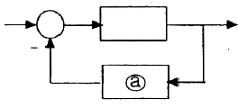
- 조절부
- 조작부
- 검출부
- 비교부
(정답률: 65%)
62. 물리적인 제량이 전기적인 신호로 처리되는 변환 장치의 정적특성이 아닌 것은?
- 정밀도
- 분해능
- 반복성
- 시정수
(정답률: 54%)
63. 그림과 같은 연산증폭기를 사용한 회로의 기능은?
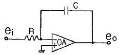
- 적분기
- 미분기
- 가산기
- 제한기
(정답률: 52%)
64. 3대의 단상변압기를 결선하여 사용 중 1대가 고장이 났을 경우 2대의 단상변압기로 V-V결선을 하여 사용할 수 있는 변압기 결선방법은?
- △-Y
- Y-△
- △-△
- Y-Y
(정답률: 63%)
65. 동기전동기의 특징이 아닌 것은?
- 정속도 전동기이다.
- 저속도에서 효율이 좋다.
- 난조가 일어나기 쉽다.
- 기동 토크가 크다.
(정답률: 45%)
66. 논리식
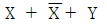
를 불대수의 정리를 이용하여 간단히 하면?- X + Y
- Y
- 1
- 0
(정답률: 45%)
67. 목표값이 다른양과 일정한 비율 관계를 가지고 변화하는 제어는?
- 추종제어
- 프로그램제어
- 비율제어
- 정치제어
(정답률: 77%)
68. 피드백 제어의 장점이 아닌 것은?
- 제어기 부품들의 성능이 나쁘면 큰 영향을 받는다.
- 외부조건의 변화에 대한 영향을 줄일 수 있다.
- 제어계의 특성을 향상시킬 수 있다.
- 목표값을 정확히 달성할 수 있다.
(정답률: 60%)
69. 다음 전지에서 2차 전지에 속하는 것은?
- 망간 건전지
- 공기 전지
- 수은 전지
- 납축 전지
(정답률: 55%)
70. 회로에서 i2가 0이 되기 위한 C 의 값은? (단, L은 합성인덕턴스, M은 상호인덕턴스이다.)
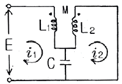
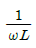
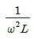
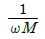
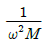
(정답률: 50%)
71. 비행기 및 선박의 방향제어에 사용되는 것은?
- 프로세스 제어
- 자동조정
- 서보 제어
- 시퀀스 제어
(정답률: 69%)
72. 그림과 같은 신호-흐름선도에서 전달함수 G를 구하면?
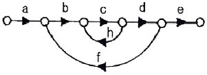
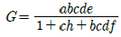
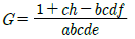
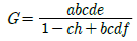
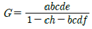
(정답률: 54%)
73. 교류에서 똑같은 변화가 반복해서 나타날 때 표현되는 용어로 1회의 변화를 하는데 걸리는 시간을 무엇이라 하는가?
- 주파수
- 각속도
- 주기
- 각주파수
(정답률: 71%)
74. 변압기 내부의 저항과 누설리액턴스의 %강하는 3% 및 4% 이다. 부하역률이 지상 60%일 때 이 변압기의 전압변동률은 몇 % 인가?
- 1.4
- 4
- 4.8
- 5
(정답률: 32%)
75. 다음 중 파고율이 가장 큰 파형은?
- 삼각파
- 정현파
- 반원파
- 구형파
(정답률: 61%)
76. 그림에서 3개의 입력단자에 각각 1을 입력하면 출력단자 A와 B의 출력은?
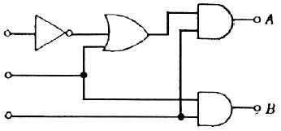
- A=0, B=0
- A=1, B=0
- A=1, B=1
- A=0, B=1
(정답률: 63%)
77. 지멘스(siemens)는 무엇의 단위인가?
- 도전율
- 자기저항
- 리액턴스
- 컨덕턴스
(정답률: 56%)
78. 그림과 같은 펄스를 라플라스 변환하면 그 값은?
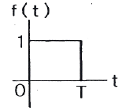
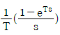
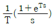
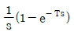
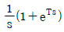
(정답률: 60%)
79. 다음 회로는 무접점 논리회로 중 어떤 회로인가?
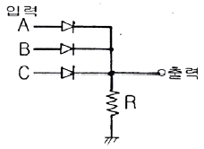
- AND 회로
- OR 회로
- NAND 회로
- NOR 회로
(정답률: 60%)
80. 150[kVA] 단상변압기의 철손이 1[kW], 전 부하동 손이 4[kW]이다. 이 변압기의 최대 효율은 몇 [kVA]의 부하에서 나타나는가?
- 25
- 75
- 100
- 125
(정답률: 42%)
5과목: 배관일반
81. 강관의 이음법에 속하지 않는 것은?
- 나사 이음
- 플랜지 이음
- 용접 이음
- 코킹 이음
(정답률: 64%)
82. 급수배관에서 공기실의 설치목적으로 가장 적당한 것은?
- 유량조절
- 유속조절
- 부식방지
- 수격작용방지
(정답률: 71%)
83. 공기조화 설비에서 에어워셔(Air Washer)의 플러딩 노즐이 하는 역할은?
- 공기 중에 포함된 수분을 제거한다.
- 입구공기의 난류를 정류로 만든다.
- 일리미네이터에 부착된 먼지를 제거한다.
- 출구에 섞여 나가는 비산수를 제거한다.
(정답률: 73%)
84. 다음 도시기호의 이음은?
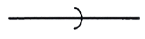
- 나사식 이음
- 용접식 이음
- 소켓식 이음
- 플랜지식 이음
(정답률: 66%)
85. 유기질 보온재가 아닌 것은?
- 펠트
- 코르크
- 기포성수지
- 탄산마그네슘
(정답률: 55%)
86. 증기배관의 수평 환수관에서 관경을 축소할 때 사용하는 이음쇠로 가장 적합한 것은?
- 소켓
- 부싱
- 동심 리듀서
- 편심 리듀서
(정답률: 75%)
87. 방열기 주위배관 설명으로 옳지 않은 것은?
- 방열기 주위는 스위블 이음으로 배관한다.
- 공급관은 앞쪽올림의 역구배로 한다.
- 환수관은 앞쪽내림의 순구배로 한다.
- 구배를 취할 수 없거나 수평주관이 2.5m 이상일때는 한 치수 작은 지름으로 한다.
(정답률: 73%)
88. 도시가스 배관에서 고압이라 함은 얼마 이상의 압력(게이지압력)을 말하는가?
- 0.1MPa 이상
- 0.2MPa 이상
- 0.5MPa 이상
- 1MPa 이상
(정답률: 64%)
89. 대 ㆍ 소변기 및 이와 유사한 용도를 갖는 기구로부터 배출되는 물과 이것을 함유하는 배수를 무엇이라 하는가?
- 우수
- 오수
- 잡배수
- 특수배수
(정답률: 75%)
90. 같은 지름의 관을 직선으로 연결할 때 사용하는 이음쇠가 아닌 것은?
- 소켓(socket)
- 유니언(union)
- 벤드(bend)
- 플랜지(flange)
(정답률: 73%)
91. 통기관을 접속하여도 장시간 위생기기를 사용하지 않을 때 봉수파괴가 될 수 있는 원인으로 가장 적당한 것은?
- 자기사이펀 작용
- 흡인작용
- 분출작용
- 증발작용
(정답률: 60%)
92. 온수온도 90℃의 온수난방 배관의 보온재로 부적합한 것은?
- 규산칼슘
- 퍼얼라이트
- 암면
- 경질포옴라버
(정답률: 64%)
93. 지역난방의 특징에 대하여 잘못 설명된 것은?
- 대규모 열원기기를 이용한 에너지 효율적 이용이 가능하다.
- 대기 오염물질이 증가한다.
- 도시의 방재수준 향상이 가능하다.
- 사용자에게는 화제에 대한 우려가 적다.
(정답률: 79%)
94. 스테인리스강 커플링과 고무링만으로 이음 할 수 있는 방법으로 쉽게 이음할 수 있고, 시공이 간편하며, 경제성이 있어 건물의 배수관 등에 많이 사용되는 주철관 이음은?
- 기계식 이음
- 노-허브 이음
- 빅토릭 이음
- 플랜지 이음
(정답률: 45%)
95. 증기난방을 응축수환수법에 의해 분류하였을 때 그 종류가 아닌 것은?
- 기계 환수식
- 하트포드 환수식
- 중력 환수식
- 진공 환수식
(정답률: 68%)
96. 소형, 경량으로 설치면적이 적고 효율이 좋으므로 가장 많이 사용되고 있는 냉각탑은?
- 대기식 냉각탑
- 대향류식 냉각탑
- 직교류식 냉각탑
- 밀폐식 냉각탑
(정답률: 65%)
97. 베어퍼록 현상은 액의 끓음에 의한 동요를 말하며 이를 방지하는 방지법이 아닌 것은?
- 실린더 라이너의 외부를 가열한다.
- 흡입배관을 크게 하고 단열 처리한다.
- 펌프의 설치위치를 낮춘다.
- 흡입관로를 깨끗이 청소한다.
(정답률: 69%)
98. 가스배관 시공에 대한 설명으로 틀린 것은?
- 건물 내 배관은 안전을 고려, 벽, 바닥 등에 매설 하여 시공한다.
- 건축물의 벽을 관통하는 부분의 배관에는 보호관 및 부식방지 피복을 한다.
- 배관의 경로와 위치는 장래의 계획, 다른 설비와의 조화 등을 고려하여 정한다.
- 부식의 우려가 있는 장소에 배관하는 경우에는 방식, 절연조치를 한다.
(정답률: 75%)
99. 복사난방을 대류난방과 비교할 때 복사난방의 장 ㆍ단점을 열거 한 것 중 틀린 것은?
- 실의 높이에 따른 온도 편차가 비교적 균일하며 쾌감도가 좋다.
- 방열기가 없으므로 공간의 이용도가 좋다.
- 배관의 수리가 곤란하고, 외기의 급변화에 따른 온도조절이 곤란한다.
- 공기의 대류가 많아 실내의 먼지가 상승한다.
(정답률: 66%)
100. 장치내 전수량 20000L이며, 수온을 20℃에서 80℃로 상승시킬 경우 물의 팽창수량은 약 얼마인가?(단, 20℃일 때 비중량 0.99823kg/L, 80℃일 때 0.97183kg/L이다.)
- 54.3
- 400L
- 543L
- 5430L
(정답률: 58%)